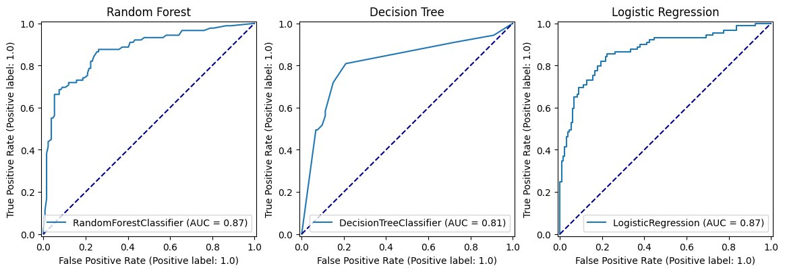

import numpy as np
import pandas as pd
# Import machine learning methods
from sklearn.ensemble import RandomForestClassifier
from sklearn.model_selection import train_test_split
from sklearn.tree import plot_tree
import plotly.express as px
import matplotlib.pyplot as plt
%matplotlib inline
from sklearn.metrics import auc, roc_curve, RocCurveDisplay, f1_score, precision_score, \
recall_score, confusion_matrix, ConfusionMatrixDisplay6 Random Forests for Classification (Titanic Dataset)
download_required = True
if download_required:
# Download processed data:
address = 'https://raw.githubusercontent.com/MichaelAllen1966/' + \
'1804_python_healthcare/master/titanic/data/processed_data.csv'
data = pd.read_csv(address)
# Create a data subfolder if one does not already exist
import os
data_directory ='../datasets/'
if not os.path.exists(data_directory):
os.makedirs(data_directory)
# Save data
data.to_csv(data_directory + 'processed_titanic_data.csv', index=False)data = pd.read_csv('../datasets/processed_titanic_data.csv')
# Make all data 'float' type
data = data.astype(float)data.head(10)| PassengerId | Survived | Pclass | Age | SibSp | Parch | Fare | AgeImputed | EmbarkedImputed | CabinLetterImputed | ... | Embarked_missing | CabinLetter_A | CabinLetter_B | CabinLetter_C | CabinLetter_D | CabinLetter_E | CabinLetter_F | CabinLetter_G | CabinLetter_T | CabinLetter_missing | |
|---|---|---|---|---|---|---|---|---|---|---|---|---|---|---|---|---|---|---|---|---|---|
| 0 | 1.0 | 0.0 | 3.0 | 22.0 | 1.0 | 0.0 | 7.2500 | 0.0 | 0.0 | 1.0 | ... | 0.0 | 0.0 | 0.0 | 0.0 | 0.0 | 0.0 | 0.0 | 0.0 | 0.0 | 1.0 |
| 1 | 2.0 | 1.0 | 1.0 | 38.0 | 1.0 | 0.0 | 71.2833 | 0.0 | 0.0 | 0.0 | ... | 0.0 | 0.0 | 0.0 | 1.0 | 0.0 | 0.0 | 0.0 | 0.0 | 0.0 | 0.0 |
| 2 | 3.0 | 1.0 | 3.0 | 26.0 | 0.0 | 0.0 | 7.9250 | 0.0 | 0.0 | 1.0 | ... | 0.0 | 0.0 | 0.0 | 0.0 | 0.0 | 0.0 | 0.0 | 0.0 | 0.0 | 1.0 |
| 3 | 4.0 | 1.0 | 1.0 | 35.0 | 1.0 | 0.0 | 53.1000 | 0.0 | 0.0 | 0.0 | ... | 0.0 | 0.0 | 0.0 | 1.0 | 0.0 | 0.0 | 0.0 | 0.0 | 0.0 | 0.0 |
| 4 | 5.0 | 0.0 | 3.0 | 35.0 | 0.0 | 0.0 | 8.0500 | 0.0 | 0.0 | 1.0 | ... | 0.0 | 0.0 | 0.0 | 0.0 | 0.0 | 0.0 | 0.0 | 0.0 | 0.0 | 1.0 |
| 5 | 6.0 | 0.0 | 3.0 | 28.0 | 0.0 | 0.0 | 8.4583 | 1.0 | 0.0 | 1.0 | ... | 0.0 | 0.0 | 0.0 | 0.0 | 0.0 | 0.0 | 0.0 | 0.0 | 0.0 | 1.0 |
| 6 | 7.0 | 0.0 | 1.0 | 54.0 | 0.0 | 0.0 | 51.8625 | 0.0 | 0.0 | 0.0 | ... | 0.0 | 0.0 | 0.0 | 0.0 | 0.0 | 1.0 | 0.0 | 0.0 | 0.0 | 0.0 |
| 7 | 8.0 | 0.0 | 3.0 | 2.0 | 3.0 | 1.0 | 21.0750 | 0.0 | 0.0 | 1.0 | ... | 0.0 | 0.0 | 0.0 | 0.0 | 0.0 | 0.0 | 0.0 | 0.0 | 0.0 | 1.0 |
| 8 | 9.0 | 1.0 | 3.0 | 27.0 | 0.0 | 2.0 | 11.1333 | 0.0 | 0.0 | 1.0 | ... | 0.0 | 0.0 | 0.0 | 0.0 | 0.0 | 0.0 | 0.0 | 0.0 | 0.0 | 1.0 |
| 9 | 10.0 | 1.0 | 2.0 | 14.0 | 1.0 | 0.0 | 30.0708 | 0.0 | 0.0 | 1.0 | ... | 0.0 | 0.0 | 0.0 | 0.0 | 0.0 | 0.0 | 0.0 | 0.0 | 0.0 | 1.0 |
10 rows × 26 columns
data.describe()| PassengerId | Survived | Pclass | Age | SibSp | Parch | Fare | AgeImputed | EmbarkedImputed | CabinLetterImputed | ... | Embarked_missing | CabinLetter_A | CabinLetter_B | CabinLetter_C | CabinLetter_D | CabinLetter_E | CabinLetter_F | CabinLetter_G | CabinLetter_T | CabinLetter_missing | |
|---|---|---|---|---|---|---|---|---|---|---|---|---|---|---|---|---|---|---|---|---|---|
| count | 891.000000 | 891.000000 | 891.000000 | 891.000000 | 891.000000 | 891.000000 | 891.000000 | 891.000000 | 891.000000 | 891.000000 | ... | 891.000000 | 891.000000 | 891.000000 | 891.000000 | 891.000000 | 891.000000 | 891.000000 | 891.000000 | 891.000000 | 891.000000 |
| mean | 446.000000 | 0.383838 | 2.308642 | 29.361582 | 0.523008 | 0.381594 | 32.204208 | 0.198653 | 0.002245 | 0.771044 | ... | 0.002245 | 0.016835 | 0.052750 | 0.066218 | 0.037037 | 0.035915 | 0.014590 | 0.004489 | 0.001122 | 0.771044 |
| std | 257.353842 | 0.486592 | 0.836071 | 13.019697 | 1.102743 | 0.806057 | 49.693429 | 0.399210 | 0.047351 | 0.420397 | ... | 0.047351 | 0.128725 | 0.223659 | 0.248802 | 0.188959 | 0.186182 | 0.119973 | 0.066890 | 0.033501 | 0.420397 |
| min | 1.000000 | 0.000000 | 1.000000 | 0.420000 | 0.000000 | 0.000000 | 0.000000 | 0.000000 | 0.000000 | 0.000000 | ... | 0.000000 | 0.000000 | 0.000000 | 0.000000 | 0.000000 | 0.000000 | 0.000000 | 0.000000 | 0.000000 | 0.000000 |
| 25% | 223.500000 | 0.000000 | 2.000000 | 22.000000 | 0.000000 | 0.000000 | 7.910400 | 0.000000 | 0.000000 | 1.000000 | ... | 0.000000 | 0.000000 | 0.000000 | 0.000000 | 0.000000 | 0.000000 | 0.000000 | 0.000000 | 0.000000 | 1.000000 |
| 50% | 446.000000 | 0.000000 | 3.000000 | 28.000000 | 0.000000 | 0.000000 | 14.454200 | 0.000000 | 0.000000 | 1.000000 | ... | 0.000000 | 0.000000 | 0.000000 | 0.000000 | 0.000000 | 0.000000 | 0.000000 | 0.000000 | 0.000000 | 1.000000 |
| 75% | 668.500000 | 1.000000 | 3.000000 | 35.000000 | 1.000000 | 0.000000 | 31.000000 | 0.000000 | 0.000000 | 1.000000 | ... | 0.000000 | 0.000000 | 0.000000 | 0.000000 | 0.000000 | 0.000000 | 0.000000 | 0.000000 | 0.000000 | 1.000000 |
| max | 891.000000 | 1.000000 | 3.000000 | 80.000000 | 8.000000 | 6.000000 | 512.329200 | 1.000000 | 1.000000 | 1.000000 | ... | 1.000000 | 1.000000 | 1.000000 | 1.000000 | 1.000000 | 1.000000 | 1.000000 | 1.000000 | 1.000000 | 1.000000 |
8 rows × 26 columns
# Drop Passengerid (axis=1 indicates we are removing a column rather than a row)
# We drop passenger ID as it is not original data
# inplace=True means change the dataframe itself - don't create a copy with this column dropped
data.drop('PassengerId', inplace=True, axis=1)6.1 Divide into X (features) and y (labels)
X = data.drop('Survived',axis=1) # X = all 'data' except the 'survived' column
y = data['Survived'] # y = 'survived' column from 'data'6.2 Divide into training and tets sets
X_train, X_test, y_train, y_test = train_test_split(X, y, test_size = 0.25)6.3 Fit random forest model
model = RandomForestClassifier(random_state=42)
model = model.fit(X_train,y_train)6.4 Predict values
# Predict training and test set labels
y_pred_train = model.predict(X_train)
y_pred_test = model.predict(X_test)6.5 Calculate accuracy
# The shorthand below says to check each predicted y value against the actual
# y value in the training data. This gives a list of True and False values
# for each prediction, where True indicates the predicted value matches the
# actual value. Then we take the mean of these Boolean values, which gives
# us a proportion (where if all values were True, the proportion would be 1.0)
# If you want to see why that works, just uncomment the following line of code
# to see what y_pred_train == y_train is doing.
# print (y_pred_train == y_train)
accuracy_train = np.mean(y_pred_train == y_train)
accuracy_test = np.mean(y_pred_test == y_test)
print (f'Accuracy of predicting training data = {accuracy_train}')
print (f'Accuracy of predicting test data = {accuracy_test}')Accuracy of predicting training data = 0.9835329341317365
Accuracy of predicting test data = 0.8026905829596412# Show first ten predicted classes
classes = model.predict(X_test)
classes[0:10]array([0., 0., 0., 1., 0., 1., 1., 0., 1., 1.])# Show first ten predicted probabilities
probabilities = model.predict_proba(X_test)
probabilities[0:10]array([[0.76 , 0.24 ],
[0.98 , 0.02 ],
[0.94 , 0.06 ],
[0.04 , 0.96 ],
[0.67 , 0.33 ],
[0.08 , 0.92 ],
[0.1572482, 0.8427518],
[0.93 , 0.07 ],
[0.32 , 0.68 ],
[0.12 , 0.88 ]])6.6 Calculate F1 Score
f1_score(y_test, y_pred_test, average=None)array([0.83703704, 0.75 ])f1_score(y_test, y_pred_test, average='micro')0.8026905829596412f1_score(y_test, y_pred_test, average='macro')0.7935185185185185f1_score(y_test, y_pred_test, average='weighted')0.80230028234512556.7 Plot tree
https://stackoverflow.com/questions/40155128/plot-trees-for-a-random-forest-in-python-with-scikit-learn
fig, axes = plt.subplots(nrows = 1, ncols = 5, figsize = (10,2), dpi=900)
for index in range(0, 5):
plot_tree(model.estimators_[index],
feature_names=data.drop('Survived',axis=1).columns.tolist(),
class_names=['Died', 'Survived'],
filled = True,
ax = axes[index]);
axes[index].set_title('Estimator: ' + str(index), fontsize = 11)7 Comparing Performance
def train_and_run(model):
model.fit(X_train,y_train)
y_pred_train = model.predict(X_train)
y_pred_test = model.predict(X_test)
accuracy_train = np.mean(y_pred_train == y_train)
accuracy_test = np.mean(y_pred_test == y_test)
print (f'Accuracy of predicting training data = {accuracy_train:.3f}')
print (f'Accuracy of predicting test data = {accuracy_test:.3f}')
print(f"F1 score: no averaging = {[f'{i:.3f}' for i in f1_score(y_test, y_pred_test, average=None)]}")
print(f"F1 score: micro = {f1_score(y_test, y_pred_test, average="micro"):.3f}")
print(f"F1 score: macro = {f1_score(y_test, y_pred_test, average="macro"):.3f}")
print(f"F1 score: weighted = {f1_score(y_test, y_pred_test, average="weighted"):.3f}")from sklearn.tree import DecisionTreeClassifier
train_and_run(model = DecisionTreeClassifier())Accuracy of predicting training data = 0.984
Accuracy of predicting test data = 0.758
F1 score: no averaging = ['0.795', '0.703']
F1 score: micro = 0.758
F1 score: macro = 0.749
F1 score: weighted = 0.759np.random.seed(42)
train_and_run(model = RandomForestClassifier(random_state=42))Accuracy of predicting training data = 0.984
Accuracy of predicting test data = 0.794
F1 score: no averaging = ['0.830', '0.739']
F1 score: micro = 0.794
F1 score: macro = 0.784
F1 score: weighted = 0.7937.0.0.1 Random Forest
np.random.seed(42)
random_forest_model = RandomForestClassifier(random_state=42)
random_forest_model = random_forest_model.fit(X_train,y_train)
y_pred_train_rf = random_forest_model.predict(X_train)
y_pred_test_rf = random_forest_model.predict(X_test)
roc_curve_rf = RocCurveDisplay.from_estimator(
random_forest_model, X_test, y_test
)
confusion_matrix_rf = ConfusionMatrixDisplay(
confusion_matrix=confusion_matrix(
y_true=y_test,
y_pred=y_pred_test_rf
),
display_labels=["Died", "Survived"]
)
confusion_matrix_rf_normalised = ConfusionMatrixDisplay(
confusion_matrix=confusion_matrix(
y_true=y_test,
y_pred=y_pred_test_rf,
normalize='true'
),
display_labels=["Died", "Survived"]
)7.0.0.2 Decision Tree
np.random.seed(42)
decision_tree_model = DecisionTreeClassifier(max_depth=6)
decision_tree_model = decision_tree_model.fit(X_train,y_train)
y_pred_train_dt = decision_tree_model.predict(X_train)
y_pred_test_dt = decision_tree_model.predict(X_test)
roc_curve_dt = RocCurveDisplay.from_estimator(
decision_tree_model, X_test, y_test
)
confusion_matrix_dt = ConfusionMatrixDisplay(
confusion_matrix=confusion_matrix(
y_true=y_test,
y_pred=y_pred_test_dt
),
display_labels=["Died", "Survived"]
)
confusion_matrix_dt_normalised = ConfusionMatrixDisplay(
confusion_matrix=confusion_matrix(
y_true=y_test,
y_pred=y_pred_test_dt,
normalize='true'
),
display_labels=["Died", "Survived"]
)
7.0.0.3 Logistic Regression
from sklearn.linear_model import LogisticRegression
from sklearn.preprocessing import StandardScaler
np.random.seed(42)
def standardise_data(X_train, X_test):
# Initialise a new scaling object for normalising input data
sc = StandardScaler()
# Apply the scaler to the training and test sets
train_std=sc.fit_transform(X_train)
test_std=sc.fit_transform(X_test)
return train_std, test_std
X_train_standardised, X_test_standardised = standardise_data(X_train, X_test)
logistic_regression_model = LogisticRegression()
logistic_regression_model.fit(X_train_standardised,y_train)
y_pred_train_lr = logistic_regression_model.predict(X_train_standardised)
y_pred_test_lr = logistic_regression_model.predict(X_test_standardised)
roc_curve_lr = RocCurveDisplay.from_estimator(
logistic_regression_model, X_test_standardised, y_test
)
confusion_matrix_lr = ConfusionMatrixDisplay(
confusion_matrix=confusion_matrix(
y_true=y_test,
y_pred=y_pred_test_lr
),
display_labels=["Died", "Survived"]
)
confusion_matrix_lr_normalised = ConfusionMatrixDisplay(
confusion_matrix=confusion_matrix(
y_true=y_test,
y_pred=y_pred_test_lr,
normalize='true'
),
display_labels=["Died", "Survived"]
)fig, (ax1, ax2, ax3) = plt.subplots(1, 3, figsize=(14, 5))
confusion_matrix_rf.plot(ax=ax1)
ax1.title.set_text('Random Forest')
confusion_matrix_dt.plot(ax=ax2)
ax2.title.set_text('Decision Tree')
confusion_matrix_lr.plot(ax=ax3)
ax3.title.set_text('Logistic Regression')fig, (ax1, ax2, ax3) = plt.subplots(1, 3, figsize=(14, 5))
confusion_matrix_rf_normalised.plot(ax=ax1)
ax1.title.set_text('Random Forest - Normalised')
confusion_matrix_dt_normalised.plot(ax=ax2)
ax2.title.set_text('Decision Tree - Normalised')
confusion_matrix_lr_normalised.plot(ax=ax3)
ax3.title.set_text('Logistic Regression - Normalised')fig, (ax1, ax2, ax3) = plt.subplots(1, 3, figsize=(14, 5))
roc_curve_rf.plot(ax=ax1)
ax1.title.set_text('Random Forest')
ax1.plot([0, 1], [0, 1], color='darkblue', linestyle='--')
roc_curve_dt.plot(ax=ax2)
ax2.title.set_text('Decision Tree')
ax2.plot([0, 1], [0, 1], color='darkblue', linestyle='--')
roc_curve_lr.plot(ax=ax3)
ax3.title.set_text('Logistic Regression')
ax3.plot([0, 1], [0, 1], color='darkblue', linestyle='--')
7.1 Hyperparameters
7.1.1 n estimators (trees per forest)
accuracy_results = []
for i in range(10, 500, 10):
model = model = RandomForestClassifier(n_estimators=i, random_state=42)
model.fit(X_train,y_train)
y_pred_train = model.predict(X_train)
y_pred_test = model.predict(X_test)
accuracy_train = np.mean(y_pred_train == y_train)
accuracy_test = np.mean(y_pred_test == y_test)
accuracy_results.append({'accuracy_train': accuracy_train, 'accuracy_test': accuracy_test, 'n_estimators': i})
px.line(pd.DataFrame(accuracy_results).melt(id_vars='n_estimators'),
x='n_estimators', y='value', color='variable')Unable to display output for mime type(s): application/vnd.plotly.v1+jsonpd.DataFrame(accuracy_results).set_index("n_estimators").sort_values(by=["accuracy_test"], ascending=False)| accuracy_train | accuracy_test | |
|---|---|---|
| n_estimators | ||
| 30 | 0.980539 | 0.807175 |
| 40 | 0.980539 | 0.807175 |
| 50 | 0.982036 | 0.802691 |
| 20 | 0.980539 | 0.802691 |
| 10 | 0.976048 | 0.798206 |
| 60 | 0.983533 | 0.798206 |
| 70 | 0.983533 | 0.798206 |
| 80 | 0.983533 | 0.798206 |
| 90 | 0.983533 | 0.798206 |
| 120 | 0.983533 | 0.793722 |
| 100 | 0.983533 | 0.793722 |
| 110 | 0.983533 | 0.793722 |
| 210 | 0.983533 | 0.793722 |
| 450 | 0.983533 | 0.789238 |
| 440 | 0.983533 | 0.789238 |
| 260 | 0.983533 | 0.789238 |
| 240 | 0.983533 | 0.789238 |
| 230 | 0.983533 | 0.789238 |
| 220 | 0.983533 | 0.789238 |
| 250 | 0.983533 | 0.789238 |
| 200 | 0.983533 | 0.789238 |
| 180 | 0.983533 | 0.789238 |
| 170 | 0.983533 | 0.789238 |
| 160 | 0.983533 | 0.789238 |
| 150 | 0.983533 | 0.789238 |
| 190 | 0.983533 | 0.789238 |
| 130 | 0.983533 | 0.789238 |
| 140 | 0.983533 | 0.789238 |
| 420 | 0.983533 | 0.784753 |
| 400 | 0.983533 | 0.784753 |
| 410 | 0.983533 | 0.784753 |
| 460 | 0.983533 | 0.784753 |
| 430 | 0.983533 | 0.784753 |
| 380 | 0.983533 | 0.784753 |
| 470 | 0.983533 | 0.784753 |
| 480 | 0.983533 | 0.784753 |
| 390 | 0.983533 | 0.784753 |
| 350 | 0.983533 | 0.784753 |
| 370 | 0.983533 | 0.784753 |
| 360 | 0.983533 | 0.784753 |
| 340 | 0.983533 | 0.784753 |
| 330 | 0.983533 | 0.784753 |
| 320 | 0.983533 | 0.784753 |
| 310 | 0.983533 | 0.784753 |
| 300 | 0.983533 | 0.784753 |
| 290 | 0.983533 | 0.784753 |
| 280 | 0.983533 | 0.784753 |
| 270 | 0.983533 | 0.784753 |
| 490 | 0.983533 | 0.784753 |
7.1.2 n estimators (trees per forest) - with max depth of 8
accuracy_results = []
for i in range(10, 200, 10):
model = RandomForestClassifier(n_estimators=i, random_state=42, max_depth=8)
model.fit(X_train,y_train)
y_pred_train = model.predict(X_train)
y_pred_test = model.predict(X_test)
accuracy_train = np.mean(y_pred_train == y_train)
accuracy_test = np.mean(y_pred_test == y_test)
accuracy_results.append({'accuracy_train': accuracy_train, 'accuracy_test': accuracy_test, 'n_estimators': i})
px.line(pd.DataFrame(accuracy_results).melt(id_vars='n_estimators'),
x='n_estimators', y='value', color='variable')Unable to display output for mime type(s): application/vnd.plotly.v1+jsonpd.DataFrame(accuracy_results).set_index("n_estimators").sort_values(by=["accuracy_test"], ascending=False)| accuracy_train | accuracy_test | |
|---|---|---|
| n_estimators | ||
| 190 | 0.919162 | 0.829596 |
| 180 | 0.922156 | 0.829596 |
| 170 | 0.923653 | 0.829596 |
| 150 | 0.922156 | 0.829596 |
| 140 | 0.922156 | 0.829596 |
| 90 | 0.919162 | 0.829596 |
| 110 | 0.920659 | 0.825112 |
| 160 | 0.923653 | 0.825112 |
| 130 | 0.920659 | 0.825112 |
| 10 | 0.892216 | 0.825112 |
| 80 | 0.920659 | 0.825112 |
| 70 | 0.920659 | 0.825112 |
| 50 | 0.919162 | 0.825112 |
| 100 | 0.920659 | 0.825112 |
| 120 | 0.920659 | 0.820628 |
| 20 | 0.902695 | 0.816143 |
| 40 | 0.913174 | 0.816143 |
| 60 | 0.920659 | 0.811659 |
| 30 | 0.914671 | 0.811659 |
np.random.seed(42)
best_n_estimators = pd.DataFrame(accuracy_results).sort_values(by=["accuracy_test"], ascending=False).head(1)['n_estimators'].values[0]
model = RandomForestClassifier(n_estimators=best_n_estimators, random_state=42, max_depth=8)
model.fit(X_train,y_train)
y_pred_train = model.predict(X_train)
y_pred_test = model.predict(X_test)
roc_curve = RocCurveDisplay.from_estimator(
model, X_test, y_test
)
fig = roc_curve.figure_
ax = roc_curve.ax_
ax.plot([0, 1], [0, 1], color='darkblue', linestyle='--')ConfusionMatrixDisplay(
confusion_matrix=confusion_matrix(
y_true=y_test,
y_pred=y_pred_test
),
display_labels=["Died", "Survived"]
).plot()ConfusionMatrixDisplay(
confusion_matrix=confusion_matrix(
y_true=y_test,
y_pred=y_pred_test,
normalize='true'
),
display_labels=["Died", "Survived"]
).plot()